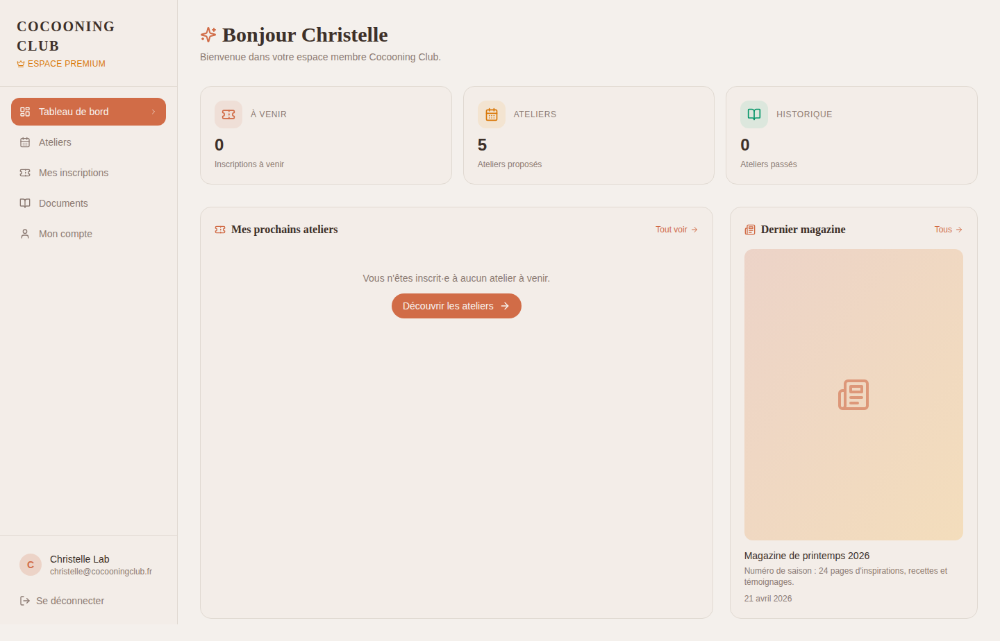
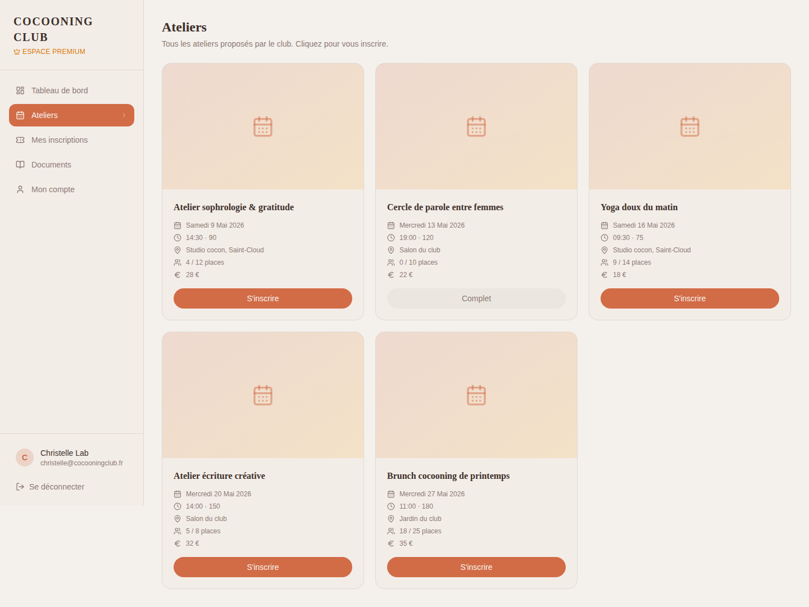
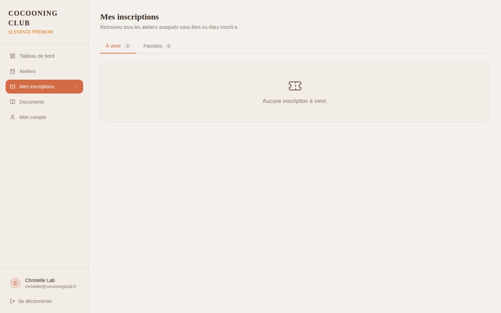
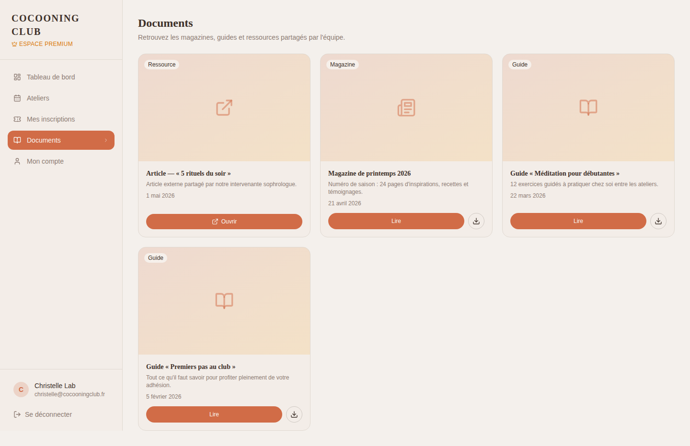
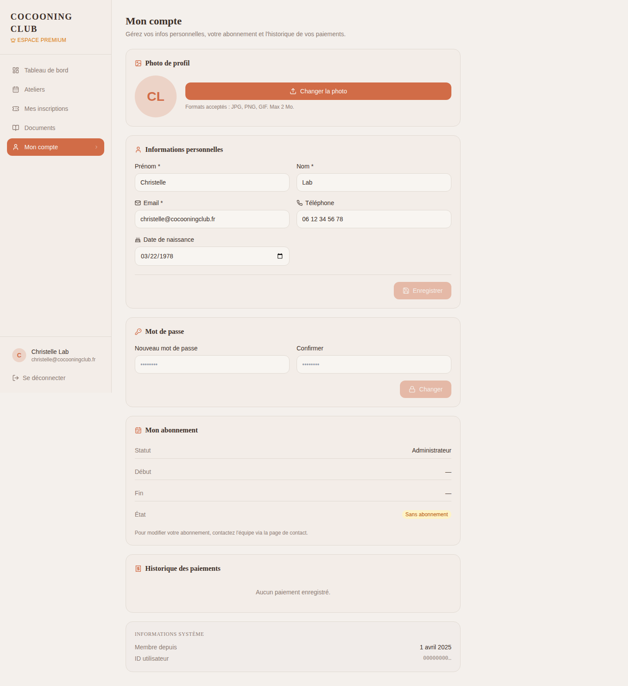

#1
Espace membre (rôles inscrit / membre)
Membre · Tableau de bord
/espace-membre

Page d'accueil de l'espace membre : prochaines inscriptions, raccourcis, magazine.
Pour chaque page : la capture sur une planche A4, puis sur la planche suivante un set de questions UX (parcours, perception, friction) et UI (composition, composants, accessibilité), avec un espace de notes libres.
Page d'accueil de l'espace membre : prochaines inscriptions, raccourcis, magazine.

Catalogue des ateliers à venir avec inscription en 1 clic depuis l'espace membre.

Historique et état des inscriptions de la membre.

Lecture du magazine du club : numéros et articles.

Paramètres personnels de la membre : profil, préférences, sécurité.

Page d'accueil de l'espace premium, avec contenus exclusifs et avantages.

Catalogue des ateliers, version premium (priorité d'accès, tarif réduit, ateliers exclusifs).

Suivi des inscriptions de la membre premium (équivalent membre standard avec services additionnels).

Magazine premium : articles bonus, archives complètes, formats enrichis.

Paramètres personnels de la membre premium, avec gestion d'abonnement.